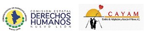
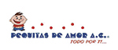

OBJETIVO
Sensibilizar a nuestros estudiantes, egresados, personal administrativo y docente con el propósito de poder coadyuvar en la formación de ingenieros de clase mundial, dentro de una institución socialmente responsable por su calidad, relevancia y contribuciones al desarrollo científico y tecnológico, a la innovación, la construcción de escuelas de pensamiento y al desarrollo humano de la sociedad.
Ejes Temáticos:



